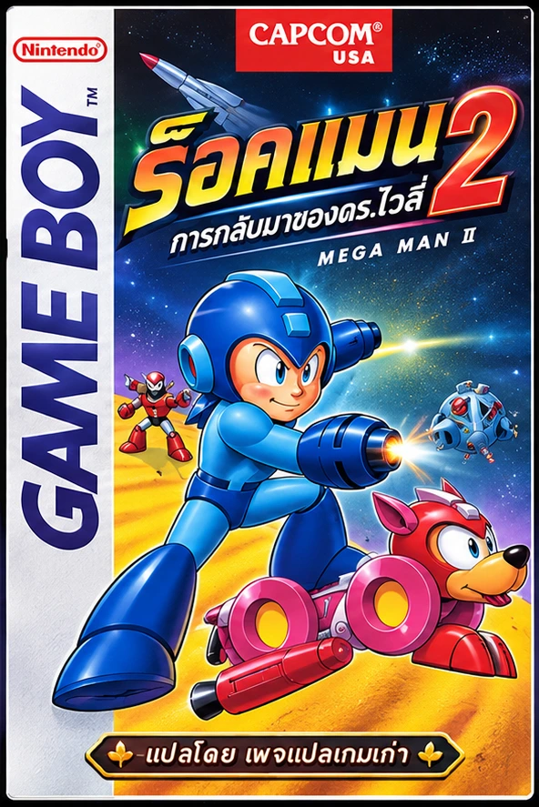

ร็อคแมน 2 การกลับมาของ ดร.ไวลี่
Mega Man II · Game Boy · ภาษาไทย v1.0

เรื่องย่อ
เมื่อ ดร.ไวลี่ ได้เครื่องเดินทางข้ามเวลามาครอง ศัตรูจากต่างยุคก็กลับมาขวางทาง ร็อคแมนกับรัชต้องไล่ตามเขาไป ก่อนจะพบว่าหุ่นยนต์ที่น่ากลัวที่สุดในภารกิจนี้มีความลับผูกพันกับตัวร็อคแมนเอง
เกมใหม่ · 25 พฤศจิกายน 2569
ภาษาไทย v1.0 · เมนู รหัสผ่าน และชื่อบอสช่วงเปิดตัว 8 ตัว
เครดิตท้ายเกมยังเป็นภาษาอังกฤษ ยังไม่ได้ยืนยันการเล่นจนจบ
แพตช์บนเว็บ
เลือกไฟล์ Megaman II (USA).gb ขนาด 262,144 ไบต์ เบราว์เซอร์จะตรวจ SHA-256 และสร้างไฟล์ภาษาไทยบนเครื่องของคุณ
เลือก ROM ต้นฉบับเพื่อเริ่ม
แปลโดยเพจแปลเกมเก่า